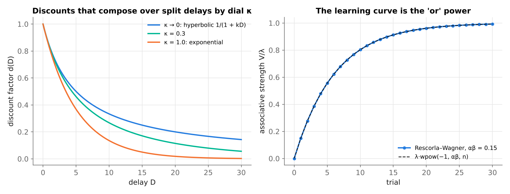

Biology series · 11 of 11
Rescorla–Wagner learning is the 'or' law applied once per trial, so the learning curve is wpow(−1, αβ, n) and training phases compose by the same law. In discounting, write the 'interest' a delay demands as u = 1/d − 1. Hyperbolic interest adds over split delays (dial 0), exponential interest composes by ∘₁ (dial 1), and a family in between composes by a fixed dial κ. That family is exponential measured from the wall −1/κ. Many-eyes vigilance and Herrnstein's hyperbola are the 'or' power and saturation again.

Known or new. All known. Rescorla and Wagner's rule (1972), its exponential approach to the asymptote, and blocking are textbook learning theory. Hyperbolic discounting (Mazur 1987), the generalised hyperbola (Loewenstein and Prelec 1992), subadditive discounting (Read 2001), Pulliam's many-eyes model (1973) and Herrnstein's hyperbola (1970) are standard. The dial-stationary discount family is a one-line consequence of the dial algebra; I have not checked whether it appears in the discounting literature.
Is there a lead worth following? None. The placements are exact and tidy: subadditivity is exactly the dial's corner term k²D₁D₂, and the κ family joins hyperbolic to exponential through the dial. But there are already many two-parameter discount functions, and nothing here predicts a choice pattern that they do not.
On each trial associative strength moves a fraction αβ of the way to the asymptote λ. In units of λ that step is V ∘₋₁ αβ, so after n trials
Two training phases of n₁ and n₂ trials compose by the 'or' law. A compound of two cues learns its summed strength as a single cue of rate α₁ + α₂, because they share one prediction error. That shared error is also why blocking happens: in the simulation, a cue pretrained near λ left 1% of λ for a new cue added later.
Write the interest a delay D demands as u = 1/d(D) − 1, so that a delayed reward is worth A/(1 + u). How u behaves when the delay is split into D₁ then D₂ sorts the classic forms:
Loewenstein and Prelec's generalised hyperbola (1 + αD)−β/α is 1/(1 + mpow(αD, β/α)): a circle operation (called mult-add before 1.0) power of the hyperbolic interest, with α = β hyperbolic and α → 0 exponential.
A group of n animals, each spotting an approaching predator with chance p, spots it with wpow(−1, p, n): 74% for six animals at p = 0.2. Herrnstein's response-rate hyperbola R = k·r/(r + re) is k times −inv(r/re), the saturation that runs through the whole series.
| Place | What the circle operation does there | Known since | Verdict |
|---|---|---|---|
| Rescorla–Wagner | Learning curve wpow(−1, αβ, n); phases compose by 'or' | Rescorla and Wagner 1972 | Exact, known |
| Hyperbolic discounting | Interest adds (dial 0); subadditivity = corner k²D₁D₂ | Mazur 1987; Read 2001 | Exact, known |
| Exponential discounting | Interest composes by ∘₁ (dial 1) | Samuelson 1937 | Exact, known |
| Dial-κ discounting | Exponential from the wall −1/κ; joins the two | Follows from the dial | Exact; adds no prediction |
| Generalised hyperbola | 1/(1 + mpow(αD, β/α)) | Loewenstein and Prelec 1992 | Relabelling |
| Many eyes, Herrnstein | 'Or' power; saturation | Pulliam 1973; Herrnstein 1970 | Relabelling |
File biology/11-behaviour/lean/Behaviour.lean, core Lean 4.37 with no mathlib, built on the shared library's base and using ∘₁ for the circle operation. Every theorem uses only Lean's standard axioms. It goes into the shared proof library as FusedAlgebra/Topics/Biology/Behaviour.lean.
dial_split, dial_steps, exponential_split, herrnstein, hyperbolic_factor, hyperbolic_split, many_eyes, rw_curve, rw_phases, rw_step, star_def, subadditive
Numeric checks: 13 of 13 pass, from checks.py beside this page.
All numbers are simulated or algebraic; no behavioural data. Citations and dates are from memory and I did not open them.